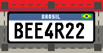

<ion-header>
  <ion-toolbar>
    <ion-buttons slot="start">
      <ion-back-button></ion-back-button>
    </ion-buttons>
  </ion-toolbar>
</ion-header>

<ion-content>
  <div id="container">
    <ion-text id="title"> Selecione a placa: </ion-text>

    

    <ion-text id="text_line">__________________</ion-text><br><br>

    <image-cropper
        [imageBase64]="image"
        [imageChangedEvent]="imageChangedEvent"
        [maintainAspectRatio]="true"
        [aspectRatio]="6 / 2"
        [resizeToWidth]="1024"
        format="jpg"
        (imageCropped)="imageCropped($event)"
        id="image_cropper"
    ></image-cropper>

    <ion-button id="button" expand="block" size="large" (click)="captureImage()">
      <ion-icon id="icon1" slot="start" name="camera-outline"></ion-icon>
      Repetir foto
    </ion-button>

    <ion-button id="button" expand="block" size="large" (click)="binarizeImage()" [disabled]="!image || !workerReady">
      <ion-icon id="icon2" slot="start" name="car-outline"></ion-icon>
      Verificar Veículo
    </ion-button>

    <canvas id="cancan" height="50px" width="200px" hidden></canvas>
  </div>
</ion-content>